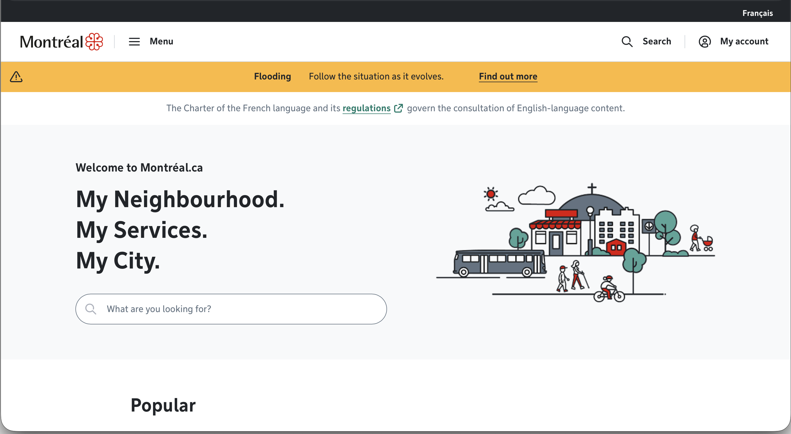

By Jamal Kennard
Screenshot:

URL of Website?
https://montreal.ca/enName of Website?
City of Montreal (English Version)
Who is the site's target audience?
The target audience of the website are the visitors and residents of Montreal who primarily speak English. There is a separate site for French Speakers.
How is the site organized?
There is a homepage with a search function front and center. There is a navbar at the top of the site that also has a search function in addition to a menu. There are also navigation links below the search bar on the homepage with the most popular pages at the top. Clicking on the city's logo returns to the homepage. The top of the page has a link to change the language to French.
What is the Audit Score according to the Accessibility Checker?
The audit score was 89%, just below the recommended 90%. The two critical issues were incorrectly applied ARIA roles and page content not contained by landmarks.
What is the site's effectiveness?
For the most part, The english site functions correctly with translated pages. However, some things were not translated over from the French site. One text box was not properly translated on the English site. One link on the English site gives a 404 error, but works correctly on the French equivalent. This particular link did not have any indication that it was French only. There are restrictions on how English can be used on the site due to Quebec's Charter of the French Language. This is mentioned in a banner that only appears on the English site.
How is the engagement?
The engagement for the site is mostly good. You can find most city services with one click on the homepage. There is a list of upcoming events towards the bottom of the homepage There is only one popup for accepting cookies. The most popular links are can be accessed quickly from the homepage. There is indication that a page is only in French most of the time.
My recommendations
The biggest issue with the site is the untranslated pages. To improve the effectiveness of the English site, more pages should be translated where the law permits. If a page is only in French, there should always be indication that that is the case.